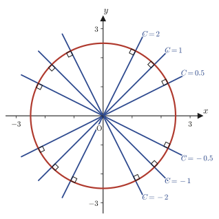
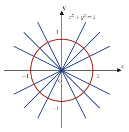
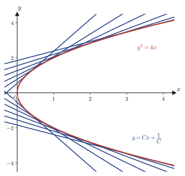
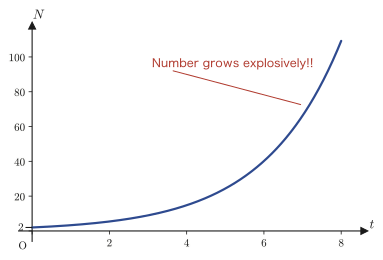
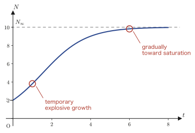

Chapter 34Exact Differential Equations, Integrating Factors, and Singular Solutions
In Chapter 33 we mastered the standard methods for solving first-order differential equations—separable equations, homogeneous-type equations, first-order linear differential equations, Bernoulli's differential equation, and Riccati's differential equation. In every one of them, we recognized the “form” of the equation and applied a fixed substitution or formula. However, not every first-order differential equation one meets fits neatly into these types. In this chapter we attack first-order differential equations starting from a completely different idea. Our clue is the total differential learned in Chapter 6.
The total differential of a function $f(x,y)$ of two variables could be written $\dd f = f_x\,\dd x+f_y\,\dd y$. So, when a differential equation of the form $P(x,y)\,\dd x+Q(x,y)\,\dd y=0$ is given, let us suspect the following: “Perhaps there actually exists a function $f(x,y)$ such that $P=f_x$ and $Q=f_y$, and this equation is merely $\dd f(x,y)=0$ rewritten.” If so, the solution of the equation is just the simple expression $f(x,y)=C$ (a constant)—the task of solving a differential equation turns into the task of merely finding $f$. We call such an equation an exact differential equation. However, when $P,Q$ are given arbitrarily, such a convenient $f$ does not always exist. We therefore learn, in order, (1) a test that tells us when it exists, and (2) for the case where it does not exist, a technique called the integrating factor, in which both sides of the equation are multiplied by something so as to force it into existence.
In the second half we treat the special equations $y=xy'+f(y')$ (Clairaut's differential equation) and $y=xf(y')+g(y')$ (Lagrange's differential equation), which are not solved for $y'$. Here, besides the “general solution” in the usual sense (the set of solutions containing the constant of integration $C$), a singular solution appears—an exceptional solution that cannot be obtained from the general solution by any choice of $C$. Geometrically, it is the envelope tangent to the family of lines represented by the general solution. Finally, we treat the logistic equation, which describes how the number of microorganisms or crystal nuclei grows, and see how exponential “explosive growth” is modified into an S-shaped curve by the limits of the environment or the material.
- Families of orthogonal curves: how to find, in the language of differential equations, a family of curves orthogonal to a given family of curves (an example of deriving the equation of a circle from a differential equation)
- The definition of an exact differential equation, $P\,\dd x+Q\,\dd y=\dd f=0$, and its test $P_y=Q_x$ (justified by Schwarz's theorem)
- Understanding, through concrete examples, why the test and the solution formula $\int_{x_0}^{x}P(x,y_0)\dd x+\int_{y_0}^{y}Q(x,y)\dd y=C$ are correct
- How to find the integrating factors $\mu(x)$, $\mu(y)$—a technique for turning an equation with $P_y\neq Q_x$ into an exact differential equation
- Clairaut's differential equation $y=xy'+f(y')$ and its singular solution (the envelope of the family of lines represented by the general solution)
- Lagrange's differential equation $y=xf(y')+g(y')$, and the solution method that uses the parameter $p=y'$ to reduce it to a first-order linear differential equation in $x$
- The logistic equation: from exponential growth $\dd N/\dd t=k_0N$ to an S-shaped curve that incorporates the carrying capacity $N_\infty$
Source notes: Yasuhide Mochizuki, Mathematics Notes: Ordinary Differential Equations, pp. 10–16.
34.1 Families of Orthogonal Curves — Deriving the Equation of a Circle with the Power of Differential Equations
To begin, let us use only the tools we have learned up through the previous chapter to derive an unexpected fact. Consider the set of all lines through the origin. The line with slope $C$ ($C$ a constant) is expressed by the equation
$$y=Cx$$If we let $C$ take various values, $y=Cx$ represents every line through the origin (except the $y$-axis itself); it is a family of lines.
34.1.1 Expressing the family of lines by a differential equation
Differentiating both sides of $y=Cx$ with respect to $x$, since $C$ is a constant, we obtain
$$y'=C$$Multiplying both sides by $x$ gives $xy'=Cx$, but the right-hand side $Cx$ is exactly equal to $y$ by the original equation, so
$$xy'=y\qquad\text{that is}\qquad y'-\frac1x y=0 \tag{34.1}\label{eq:34-lines}$$This is a differential equation that does not contain $C$. This is the crucial point—although there are infinitely many lines with different slopes $C$, every one of them satisfies the same single differential equation \eqref{eq:34-lines}. Conversely, the general solution of Eq. \eqref{eq:34-lines} (the set of solutions containing one constant of integration) is exactly this family of lines $y=Cx$.
Intuition: A differential equation expresses a “rule for slopes”
Rewriting Eq. \eqref{eq:34-lines} as $y'=y/x$ ($x\neq0$), we can read it as expressing the rule that “the slope of a curve that is allowed to pass through the point $(x,y)$ must always be $y/x$ there.” Indeed, the slope at the point $(x,Cx)$ on $y=Cx$ is certainly $C=Cx/x=y/x$. In general, a differential equation $y'=f(x,y)$ gives a rule (a direction field) that specifies, at each point of the plane, the slope of a curve passing through that point, and the family of curves $y=Cx$ is the collection of all the curves that obey this rule.
34.1.2 Constructing a family of orthogonal curves
Now let us change our viewpoint. Suppose that, at each point of the plane, we collect the curves whose slope points in the direction orthogonal (perpendicular) to the family of lines $y=Cx$. What figure will we obtain? As you learned in high school mathematics, the slope of a line perpendicular to a line of slope $m$ is $-1/m$ (the condition for two lines to be orthogonal was that the product of their slopes is $-1$). Therefore, if we substitute $-1/y'$ for the slope $y'$ of the family of lines in Eq. \eqref{eq:34-lines}, we should obtain the differential equation that the orthogonal family of curves must satisfy.
$$\frac{1}{y'}+\frac1x y=0 \qquad\Longleftrightarrow\qquad \frac{\dd y}{\dd x}=-\frac{x}{y} \tag{34.2}\label{eq:34-orth-ode}$$(The first equation is just Eq. \eqref{eq:34-lines} with $y'$ replaced by $-1/y'$. The second equation is obtained by rearranging the first into the form $1/y'=-y/x$ and then taking the reciprocal of both sides to get $y'=-x/y$.) Eq. \eqref{eq:34-orth-ode} is a separable equation (one of the basic types of first-order differential equation studied in Chapter 33), so it can be solved as it stands.
$$y\,\dd y=-x\,\dd x \quad\Longrightarrow\quad \int y\,\dd y=-\int x\,\dd x \quad\Longrightarrow\quad \frac12y^2=-\frac12x^2+C_1$$(After putting the equation into the form with only $y$ on the left-hand side and only $x$ on the right-hand side, we integrated each side. The constant of integration is collected on the right-hand side and written $C_1$.) Multiplying both sides by 2 and moving the $x^2$ term to the left-hand side gives $x^2+y^2=2C_1$. Now, renaming $2C_1$ as $C$,
$$x^2+y^2=C \tag{34.3}\label{eq:34-circle}$$we obtain the equation of a circle. That is, the family of curves orthogonal to the “family of lines $y=Cx$ through the origin” turned out to be the whole family of “circles $x^2+y^2=C$ centered at the origin.” Starting from the simple figure of a line and passing through just one differential equation, a circle appeared—this is what is meant by “deriving the equation of a circle with the power of differential equations” in the heading of this section.

Math Note: What happens when $C$ is negative
In Eq. \eqref{eq:34-circle}, $C$ must always be greater than or equal to $0$, since the left-hand side $x^2+y^2$ is a sum of squares of two real numbers. If we try $C=-1$ (that is, $2C_1=-1$), we get $x^2+y^2=-1$, and no pair $(x,y)$ of real numbers satisfies it. On the other hand, if we take $C=1$, then $x^2+y^2=1$ (the unit circle), which is certainly a meaningful figure.

34.1.3 Generalization: How to find a family of orthogonal curves
The procedure so far is, in fact, not limited to the special family of curves $y=Cx$. In general, when a family of curves containing a parameter $C$ is given, we can find the family of curves orthogonal to it (the family of orthogonal curves, also called orthogonal trajectories) by the following procedure.
Procedure 34.1: How to find a family of orthogonal curves
(i) Differentiate the equation of the family of curves with respect to $x$, and eliminate the constant $C$ between the resulting equation and the original equation, to form the differential equation $y'=f(x,y)$ satisfied by the family.
(ii) Form the differential equation $\dfrac{\dd y}{\dd x}=-\dfrac{1}{f(x,y)}$, obtained by replacing $y'$ with $-1/y'$.
(iii) Solve the differential equation in (ii). The family of solution curves obtained is the family of curves orthogonal to the original family.
Why step (ii) expresses “orthogonality” is just as we confirmed in Section 34.1.2—if the slope of the tangent at some point to some member of the family is $m$, then the slope of the tangent to the curve through that point that is orthogonal to it must be $-1/m$ (the orthogonality condition is that the product of the slopes is $m\cdot(-1/m)=-1$). This idea becomes a basic tool used in many situations in physics and engineering, such as the gradient vector we will study later (the direction of steepest ascent, which is orthogonal to the contour lines) and the relation between the electric field and equipotential lines.
Example 34.1: The family of curves orthogonal to the family of parabolas $y=Cx^2$
Find the family of curves orthogonal to the family of parabolas $y=Cx^2$ through the origin ($C$ is a constant other than $0$).
Solution. Following Procedure 34.1(i), we first form a differential equation that does not contain $C$. Differentiating both sides of $y=Cx^2$ with respect to $x$ gives $y'=2Cx$. From the original equation, $C=y/x^2$, so substituting this we obtain
$$y'=2\cdot\frac{y}{x^2}\cdot x=\frac{2y}{x}$$This is the differential equation satisfied by the family of parabolas $y=Cx^2$. Following Procedure 34.1(ii) and replacing $y'$ with $-1/y'$, we have
$$-\frac{1}{y'}=\frac{2y}{x}\qquad\Longrightarrow\qquad \frac{\dd y}{\dd x}=-\frac{x}{2y}$$which is the differential equation that the orthogonal family of curves must satisfy. This is separable, so rewriting it as $2y\,\dd y=-x\,\dd x$ and then integrating both sides, we obtain
$$y^2=-\frac{x^2}{2}+C_1\qquad\Longrightarrow\qquad x^2+2y^2=2C_1=:C'$$That is, the family of curves orthogonal to the family of parabolas $y=Cx^2$ is the family of ellipses $x^2+2y^2=C'$ (ellipses whose radius in the $x$-axis direction is $\sqrt2$ times their radius in the $y$-axis direction). (SymPy check: implicit differentiation of $x^2+2y^2=C'$ gives $2x+4yy'=0$, that is, $y'=-x/(2y)$, which indeed agrees.) As in the case of the circle, it is interesting that here too another conic section, the “ellipse,” appears as the orthogonal partner of the simple figure called a “parabola.”
34.2 Exact Differential Equations and the Test for Exactness
34.2.1 Starting from the total differential
As we learned in Chapter 6 (Section 6.3), when a function $z=f(x,y)$ of two variables is totally differentiable, its total differential can be written as
$$\dd z=f_x\,\dd x+f_y\,\dd y \tag{34.4}\label{eq:34-totaldiff}$$Here $f_x=\pdiff{f}{x}$ and $f_y=\pdiff{f}{y}$ are the partial derivatives (Chapter 6, Section 6.2) obtained by differentiating with respect to $x$ with $y$ held fixed, and with respect to $y$ with $x$ held fixed, respectively. Let us go back to the definition in terms of $\Delta x,\Delta y$ and confirm once more where this formula comes from—it is the starting point of the argument in this chapter.
If we write it out following the definition, the change in $z=f(x,y)$ when $x$ is moved by $\Delta x$ and $y$ is moved by $\Delta y$ is
$$\Delta f(x,y)=\Delta z=f(x+\Delta x,\ y+\Delta y)-f(x,y)$$Now we use a trick: on the right-hand side we bring in the term $-f(x,\ y+\Delta y)$ and immediately add the same quantity back (since it is subtracted and then added, the value does not change at all—this is just an identity).
$$\Delta z=f(x+\Delta x,\ y+\Delta y)-f(x,\ y+\Delta y)+f(x,\ y+\Delta y)-f(x,y)$$Intuition: Add back what was subtracted, multiply back what was divided
The aim of this trick is to separate the change in the $x$ direction from the change in the $y$ direction. The first pair, $f(x+\Delta x,y+\Delta y)-f(x,y+\Delta y)$, is the change obtained by moving only $x$ by $\Delta x$ while keeping the value of $y$ fixed at $y+\Delta y$, and the second pair, $f(x,y+\Delta y)-f(x,y)$, is the change obtained by moving only $y$ by $\Delta y$ while keeping the value of $x$ fixed at $x$. In this way, the change $\Delta z$ along a diagonal move has been decomposed into a two-stage motion: “first move in the $y$ direction, then move in the $x$ direction.”
Next, we divide each pair by a quantity and then multiply by the same quantity again (this too is an identity transformation that does not change the value).
$$\Delta z=\frac{f(x+\Delta x,\ y+\Delta y)-f(x,\ y+\Delta y)}{\Delta x}\cdot \Delta x+\frac{f(x,\ y+\Delta y)-f(x,y)}{\Delta y}\cdot \Delta y$$Up to this point, the equation is an identity that holds for any $\Delta x,\Delta y$. Now let us apply $\displaystyle\lim_{\substack{\Delta x\to 0\\ \Delta y \to 0}}$ to both sides. As $\Delta x\to0$ and $\Delta y\to0$, the two fractions on the right-hand side approach the very definitions of the partial derivatives—the first fraction has the form of differentiating with respect to $x$ while keeping the value of $y$ at $y+\Delta y$, so it approaches $f_x(x,\ y+\Delta y)$ as $\Delta x\to0$, and if $f_x$ is a continuous function, then letting $\Delta y\to0$ afterward gives $f_x(x,\ y+\Delta y)\to f_x(x,y)$. The second fraction approaches $f_y(x,y)$ directly as $\Delta y\to0$. Meanwhile, $\Delta x,\Delta y$ themselves approach $0$, quite literally.
Caution: Keep in mind that this argument is a “quick shorthand”
The argument above is a naive procedure that takes $\Delta x\to0$ and $\Delta y\to0$ in this order (first $x$, then $y$); logically, it is a different thing from the true two-variable limit, in which $(\Delta x,\Delta y)\to(0,0)$ is taken simultaneously and every way of approaching is considered (the total differentiability of Definition 6.3 in Chapter 6). Under the assumption that $f_x,f_y$ are continuous ($f$ is of class $C^1$), it is known that both arguments arrive at the same conclusion—Eq. \eqref{eq:34-totaldiff}—so here we may accept the result quickly. However, if you later encounter the phrase “why does $\Delta x$ become $\dd x$, and moreover become $0$?”, recall that it means “we are comparing with each other the coefficients of the first-order terms that remain after taking the limit $\Delta x,\Delta y\to0$,” and that the numbers $\Delta x,\Delta y$ themselves do indeed approach $0$ in the limit.
As a result of taking this limit, we rewrite the symbols $\Delta x,\Delta y$, which denote “finite increments,” as the symbols $\dd x,\dd y$, which denote the “infinitesimal increments” that remain after the limit—this is the reason the symbols $\dd x,\dd y$ are used in differential equations.
$$\therefore\ \frac{\partial f(x,y)}{\partial x}\cdot \dd x + \frac{\partial f(x,y)}{\partial y}\cdot \dd y = \dd f(x,y) = 0$$Here, if we set $f_x=P(x,y)$ and $f_y=Q(x,y)$, then
$$P(x,y)\,\dd x+Q(x,y)\,\dd y=\dd f(x,y)=0 \tag{34.5}\label{eq:34-exact-form}$$we obtain a differential equation of this form.
Definition 34.1: Exact differential equation
A differential equation of the form $P(x,y)\,\dd x+Q(x,y)\,\dd y=0$ is called an exact differential equation if there exists a function $f(x,y)$ of two variables such that $P=f_x$ and $Q=f_y$ (that is, as in Eq. \eqref{eq:34-exact-form}, it can be rewritten as the total differential $\dd f=0$).
The solution of an exact differential equation (Eq. \eqref{eq:34-exact-form})—that is, the explicit form of $f$ satisfying $f(x,y)=C$—is given by the following formula (we will check in Section 34.3 why it takes this form).
$$\int_{x_0}^{x} P(x,y)\,\dd x + \int_{y_0}^{y} Q(x_0,y)\,\dd y = C\qquad\text{or}\qquad\int_{x_0}^{x} P(x,y_0)\,\dd x + \int_{y_0}^{y} Q(x,y)\,\dd y = C \tag{34.6}\label{eq:34-exact-sol}$$($x_0,y_0$ are constants that you may choose yourself as the lower limits of integration; usually we take $x_0=y_0=0$ so that the computation is simple.)
Why?: Why not simply $\int P\,\dd x+\int Q\,\dd y=C$?
On first seeing Eq. \eqref{eq:34-exact-sol}, you may feel that the formula $\displaystyle\int P(x,y)\,\dd x+\int Q(x,y)\,\dd y=C$, which says “just take the indefinite integral of $P$ with respect to $x$ and that of $Q$ with respect to $y$ and add them,” looks more natural. However, since $P,Q$ are both functions of $x,y$, the result of computing $\int P\,\dd x$ changes depending on what value of $y$ is held fixed during the integration, so as it stands the answer is not determined. How this problem is resolved will be checked with a concrete example in Section 34.3.
34.2.2 The test condition $P_y=Q_x$
Taking the partial derivative of $P$ with respect to $y$ and that of $Q$ with respect to $x$ in the exact differential equation $P(x,y)\,\dd x+Q(x,y)\,\dd y=\dd f(x,y)=0$, we obtain, respectively,
$$P_y=(f_x)_y=f_{xy},\qquad Q_x=(f_y)_x=f_{yx}$$Now recall Schwarz's theorem, Theorem 6.1 in Chapter 6 (if $f_{xy},f_{yx}$ are both continuous, then $f_{xy}=f_{yx}$; that is, the order of partial differentiation may be exchanged). Since $f_{xy}=f_{yx}$,
$$\therefore\ P_y=Q_x \tag{34.7}\label{eq:34-exactcond}$$Theorem 34.1: Test condition for an exact differential equation
If $P(x,y)\,\dd x+Q(x,y)\,\dd y=0$ is an exact differential equation (that is, there exists an $f$ such that $P=f_x$ and $Q=f_y$), then, as long as $P,Q$ are of class $C^1$ (that is, the partial derivatives of order $1$, $P_x,P_y,Q_x,Q_y$, all exist and are continuous), the relation
$$P_y=Q_x$$holds.
Why?: What does $P_y=Q_x$ guarantee?
The fact that this exact differential equation can be solved by ordinary integration alone means, intuitively, that “the rate of change of $P\,(=f_x)$ in the $y$ direction” and “the rate of change of $Q\,(=f_y)$ in the $x$ direction” must represent the same quantity (both are $f_{xy}=f_{yx}$). Conversely, if $P_y\neq Q_x$, such an $f$ cannot exist—however, there remains a way to force $P_y=Q_x$ to hold, by multiplying both sides of the equation by something. This is the integrating factor, which we will study in Section 34.4.
Example 34.2: Testing for exactness and solving an exact differential equation
Verify that the differential equation $(2xy+3)\,\dd x+(x^2-1)\,\dd y=0$ is an exact differential equation, and find its general solution.
Solution. Let $P(x,y)=2xy+3$ and $Q(x,y)=x^2-1$.
$$P_y=\pdiff{}{y}(2xy+3)=2x,\qquad Q_x=\pdiff{}{x}(x^2-1)=2x$$From this, $P_y=Q_x=2x$ holds, so by the converse of Theorem 34.1 (which we will justify in Section 34.3), this equation is an exact differential equation. We compute the solution by substituting $x_0=y_0=0$ into the first expression of Eq. \eqref{eq:34-exact-sol}. First, note that $Q(x_0,y)=Q(0,y)=0^2-1=-1$ (a constant that does not contain $y$), so
$$\int_0^x P(x,y)\,\dd x+\int_0^y Q(x_0,y)\,\dd y=\int_0^x(2xy+3)\,\dd x+\int_0^y(-1)\,\dd y$$(In the first term we integrate with respect to $x$ while holding $y$ fixed, and the upper limit is the variable $x$. In the second term, we first fix the $x$ inside $Q$ at the lower limit $x_0=0$ and then integrate with respect to $y$—which is exactly why the integrand is already the constant $-1$, containing no $y$.) Computing each term, we get
$$\int_0^x(2xy+3)\,\dd x=\Big[x^2y+3x\Big]_0^x=x^2y+3x,\qquad \int_0^y(-1)\,\dd y=\Big[-y\Big]_0^y=-y$$Adding these two, the cross term $x^2y$ appears only in the first term, so it is not counted twice, and we obtain just
$$f(x,y)=x^2y+3x-y=C$$(We can check directly that $f_x=2xy+3=P$ and $f_y=x^2-1=Q$; this has also been verified with SymPy.) Thus we see that simply substituting $x_0,y_0$ into Eq. \eqref{eq:34-exact-sol} leads to the correct general solution in a single computation.
34.3 Why the Test and the Solution Formula Hold
34.3.1 Why is $P_y=Q_x$ sufficient?
What we verified in Theorem 34.1 was only the direction of the necessary condition: “if the equation is an exact differential equation, then $P_y=Q_x$.” What is really helpful when we actually solve an equation is the converse direction—the direction of the sufficient condition: “as long as $P_y=Q_x$ holds, $P\,\dd x+Q\,\dd y=0$ is an exact differential equation (that is, a suitable $f$ exists).” The original notes discuss why this converse holds, as follows.
Discussion: What does $P_y=Q_x$ guarantee? (continued from Section 34.2)
Suppose that an exact differential equation can be solved by ordinary integration alone, without any special tricks. Then the way $P\,(=f_x)$ changes in the $y$ direction ($P_y$) and the way $Q\,(=f_y)$ changes in the $x$ direction ($Q_x$) should express the same quantity—the rate of change obtained by moving the original function $f$ once in each of the $x,y$ directions. In other words, what we want to say here is that even an equation with $P_y\neq Q_x$ can be brought into an exact differential equation by some means (this device is precisely the integrating factor, which we study in Section 34.4).
This discussion is correct as intuition, but it does not yet state “the reason why $f$ really exists” itself. So, in a form that even a high-school student can follow, let us actually construct $f$ from $P_y=Q_x$—that is, prove its existence constructively.
Theorem 34.2: Test condition for an exact differential equation (sufficiency)
Suppose that $P(x,y),Q(x,y)$ are of class $C^1$ on some rectangular region of the plane (the partial derivatives $P_x,P_y,Q_x,Q_y$ are all continuous), and that
$$P_y=Q_x$$holds. Then, letting $(x_0,y_0)$ be a point in that region and setting
$$f(x,y):=\int_{x_0}^{x}P(t,y_0)\,\dd t+\int_{y_0}^{y}Q(x,s)\,\dd s \tag{34.8}\label{eq:34-fconstruct}$$we have $f_x=P$ and $f_y=Q$. That is, $P\,\dd x+Q\,\dd y=0$ is an exact differential equation, and its solution is $f(x,y)=C$.
Proof
Differentiating the second term $\displaystyle\int_{y_0}^{y}Q(x,s)\,\dd s$ of Eq. \eqref{eq:34-fconstruct} with respect to $y$ is exactly the fundamental theorem of calculus (Chapter 5)—if we differentiate with respect to the letter used at the upper limit of the interval of integration, we obtain the value of the integrand with that letter substituted into it. The first term $\displaystyle\int_{x_0}^{x}P(t,y_0)\,\dd t$ contains no $y$ (neither as the integration variable nor inside the integrand: the integration variable is $t$, and the second argument of $P$ is fixed at $y_0$), so differentiating it with respect to $y$ gives $0$. Hence,
$$f_y=\pdiff{}{y}\int_{x_0}^{x}P(t,y_0)\,\dd t+\pdiff{}{y}\int_{y_0}^{y}Q(x,s)\,\dd s=0+Q(x,y)=Q(x,y)$$and so $f_y=Q$ has been shown (note that up to this point we have not used the hypothesis $P_y=Q_x$ at all).
Next we compute $f_x$. Differentiating the first term with respect to $x$ is, again, the fundamental theorem of calculus.
$$\pdiff{}{x}\int_{x_0}^{x}P(t,y_0)\,\dd t=P(x,y_0)$$For the second term $\displaystyle\int_{y_0}^{y}Q(x,s)\,\dd s$, the interval of integration $[y_0,y]$ does not depend on $x$, so we may interchange the differentiation with respect to $x$ and the integration with respect to $s$ (this is a technique called differentiation under the integral sign, which interchanges the differentiation with respect to the parameter $x$ and the integration with respect to another variable $s$; the same technique is also used in Exercise 30.2 of Chapter 30).
$$\pdiff{}{x}\int_{y_0}^{y}Q(x,s)\,\dd s=\int_{y_0}^{y}\pdiff{Q}{x}(x,s)\,\dd s=\int_{y_0}^{y}Q_x(x,s)\,\dd s$$Here we use the hypothesis $P_y=Q_x$. If we replace $Q_x(x,s)$ by $P_y(x,s)$, the right-hand side can again be computed by the fundamental theorem of calculus (in the form of a difference of antiderivatives).
$$\int_{y_0}^{y}Q_x(x,s)\,\dd s=\int_{y_0}^{y}P_y(x,s)\,\dd s=\Big[P(x,s)\Big]_{y_0}^{y}=P(x,y)-P(x,y_0)$$(The second equality uses, in reverse, the fact that “differentiating $P(x,s)$ with respect to $s$ gives $P_y(x,s)$”—that is, the fundamental theorem of calculus.) Therefore,
$$f_x=P(x,y_0)+\big\{P(x,y)-P(x,y_0)\big\}=P(x,y)$$and so $f_x=P$ has also been shown. From the above, both $f_x=P$ and $f_y=Q$ hold, so this $f$ is the desired function, and $P\,\dd x+Q\,\dd y=\dd f=0$ holds. ∎
Intuition: We only used the fundamental theorem of calculus twice
What this proof does is actually very simple. We integrate “the single-variable function $P(x,y_0)$ with $y$ fixed at $y_0$,” and in this way first collect all of the change in the $x$ direction. Next we integrate “$Q(x,y)$ with $x$ left as a variable (which this time is allowed to move),” and collect the change in the $y$ direction. The hypothesis $P_y=Q_x$ is used only to guarantee that in the second-stage integration, “where one should really integrate $Q$, integrating instead the rate of change of $P$ in the $y$ direction gives the same answer.” Without this hypothesis, the second-stage integration would leave an extra “discrepancy” $Q_x-P_y$ in $f_x$, and we would not get $f_x=P$.
34.3.2 Why does the solution formula have this form?—Understanding it through paths of integration
If we look again closely at how Eq. \eqref{eq:34-fconstruct} is constructed, we see that it is an integral along an L-shaped path of integration leading from $(x_0,y_0)$ to $(x,y)$: first we move from $x_0$ to $x$ while remaining at $y=y_0$ (integrating only $P$ along the way), and then we move from $y_0$ to $y$ while keeping $x$ fixed (integrating only $Q$ along the way). Figure 34.3 shows this path together with another path (one that moves first in the $y$ direction and afterward in the $x$ direction).
If we integrate along path ① (first in the $x$ direction, then in the $y$ direction), then on the first segment $y=y_0$ is constant, so $\dd y=0$ and only the contribution of $P$ remains, and on the second segment $x$ is constant, so $\dd x=0$ and only the contribution of $Q$ remains.
$$f(x,y)-f(x_0,y_0)=\int_{x_0}^{x}P(t,y_0)\,\dd t+\int_{y_0}^{y}Q(x,s)\,\dd s$$This is exactly Eq. \eqref{eq:34-fconstruct}, and it corresponds to the second formula of Eq. \eqref{eq:34-exact-sol} ($\int_{x_0}^{x}P(x,y_0)\dd x+\int_{y_0}^{y}Q(x,y)\dd y=C$, although, as a matter of notational convenience, the integration variable and the letter at the upper limit are written with the same symbol). If we carry out the same computation along path ② (first in the $y$ direction, then in the $x$ direction), we obtain
$$f(x,y)-f(x_0,y_0)=\int_{y_0}^{y}Q(x_0,s)\,\dd s+\int_{x_0}^{x}P(t,y)\,\dd t$$and this corresponds to the first formula of Eq. \eqref{eq:34-exact-sol}. As we verified in the proof of Theorem 34.2, if $P_y=Q_x$ holds, then we obtain the same answer—$f(x,y)-f(x_0,y_0)$—along either path. This is the reason why we may use either of the two formulas in Eq. \eqref{eq:34-exact-sol}.
Caution: The difference from the ordinary “$\int P\,\dd x+\int Q\,\dd y$”
As we saw in the “Why?” box in Section 34.2.1, if we naively compute $\displaystyle\int P(x,y)\,\dd x+\int Q(x,y)\,\dd y$, the answer sometimes comes out wrong. The cause becomes clear here. This naive expression can be read as meaning that, when integrating $P$ and when integrating $Q$, we integrate while leaving the other variable “at its current value,” without moving it. But this differs from both of the L-shaped paths ① and ②, and it becomes an incoherent integral in which the motion in the $x$ direction and the motion in the $y$ direction are both carried out at the “current $(x,y)$” (without fixing one of them). The correct formula must, as in Eq. \eqref{eq:34-exact-sol}, first fix the other variable at the lower limit of integration, $x_0$ or $y_0$, in one of the two integrals.
Example 34.3 (example from the original notes): Why the naive sum breaks down
Let $f(x,y)=x^2+5xy+y^2$. Find $P,Q$ in the total differential $\dd f=P\,\dd x+Q\,\dd y$, and verify that $P_y=Q_x$. Then (i) compute the naive sum $\displaystyle\int P\,\dd x+\int Q\,\dd y$ and verify that it does not agree with the original $f$, and (ii) verify that computing with the path formula of Eq. \eqref{eq:34-exact-sol} correctly returns $f$.
Solution. $f_x=2x+5y$ and $f_y=5x+2y$, so $P=2x+5y$ and $Q=5x+2y$. We have $P_y=5$ and $Q_x=5$, so $P_y=Q_x$ holds.
(i) Taking the indefinite integrals of $P,Q$ separately, we get
$$\int P\,\dd x=x^2+5xy,\qquad\int Q\,\dd y=5xy+y^2$$(In the indefinite integral of $P$ we regarded $y$ as a constant, and in the indefinite integral of $Q$ we regarded $x$ as a constant.) Simply adding these, we obtain
$$x^2+5xy+5xy+y^2=x^2+10xy+y^2$$which does not agree with the original $f=x^2+5xy+y^2$—the cross term $5xy$ is counted twice in total, once from the integral of $P$ and once from the integral of $Q$ (verified with SymPy: naive sum $=x^2+10xy+y^2$. This is precisely the problem pointed out in the “Why?” box in Section 34.2.1).
(ii) Substitute $x_0=y_0=0$ into the second formula of Eq. \eqref{eq:34-exact-sol}.
$$\int_{0}^{x}P(x,0)\,\dd x+\int_{0}^{y}Q(x,y)\,\dd y=\int_0^x(2x+5\cdot0)\,\dd x+\int_0^y(5x+2y)\,\dd y$$ $$=\Big[x^2\Big]_0^x+\Big[5xy+y^2\Big]_0^y=x^2+5xy+y^2$$This time it correctly agrees with the original $f$ (verified with SymPy). The difference is that in the first integral, we first fix the $y$ inside $P$ at the lower limit $y_0=0$ and only then integrate—in this way, the cross term $5xy$ comes only from the second integral and appears exactly once, so it is not counted twice.
34.3.3 Another practical method: the undetermined-function method
The path formula of Eq. \eqref{eq:34-exact-sol} is ideal for explaining “why that formula gives the correct answer,” but when we actually do the computation by hand, the following procedure, called the undetermined-function method, often gives a clearer view of the work. We also use this method in the integrating-factor computations of Section 34.4.
Procedure 34.2: How to solve an exact differential equation (the undetermined-function method)
To solve $P\,\dd x+Q\,\dd y=0$ ($P_y=Q_x$):
(i) Take the indefinite integral of $P$ with respect to $x$ (regarding $y$ as a constant) so that $f_x=P$. In place of the constant of integration, attach an undetermined function $g(y)$ of $y$ alone: $f(x,y)=\displaystyle\int P\,\dd x+g(y)$.
(ii) Differentiate this partially with respect to $y$, and use the requirement $f_y=Q$ to find $g'(y)$.
(iii) Integrate $g'(y)$ with respect to $y$ to find $g(y)$, and substitute it into (i); then $f(x,y)=C$ is the general solution.
Let us apply this procedure to $(2xy+3)\,\dd x+(x^2-1)\,\dd y=0$ of Example 34.2 and finish the computation that was carried over from Section 34.2. By Procedure 34.2(i), integrating $P=2xy+3$ with respect to $x$ gives
$$f(x,y)=\int(2xy+3)\,\dd x+g(y)=x^2y+3x+g(y)$$(Since we integrate regarding $y$ as a constant, the integral of $2xy$ is $x^2y$, and the integral of the constant term $3$ is $3x$.) By Procedure 34.2(ii), differentiating this partially with respect to $y$ gives $f_y=x^2+g'(y)$, which must equal $Q=x^2-1$, so $g'(y)=-1$. By Procedure 34.2(iii), $g(y)=-y$ (the constant of integration is omitted here because it will be absorbed into the final $C$). Hence,
$$f(x,y)=x^2y+3x-y$$which agrees completely with the answer we obtained from the path formula in Section 34.2 (verified with SymPy). In this way, the “correct procedure” that was left pending in Example 34.2 has been established.
34.4 Integrating Factors
34.4.1 The idea of integrating factors
Caution: Even if the form looks similar, the equation is not exact when $P_y\neq Q_x$
Just because an equation has the “form” $P\,\dd x+Q\,\dd y=0$ does not mean that it is an exact differential equation. By Theorem 34.1 and Theorem 34.2, the necessary and sufficient condition for an equation to be exact is $P_y=Q_x$. An equation with $P_y\neq Q_x$ cannot be solved as it stands by the methods of Sections 34.2 and 34.3.
An exact differential equation is an equation that satisfies $P_y=Q_x$, and precisely because it does, it can be solved with ordinary integration alone by the method of Section 34.3. Then, are we completely helpless when faced with an equation with $P_y\neq Q_x$, that is, an equation that at first glance is not exact? Not at all. If we multiply both sides of the equation by a well-chosen function $\mu(x,y)$, we can sometimes force $P_y=Q_x$ to hold. This $\mu(x,y)$ is called an integrating factor.
$$P(x,y)\,\dd x+Q(x,y)\,\dd y=0 \tag{34.9}\label{eq:34-notexact}$$(Suppose that $P_y\neq Q_x$.) We multiply both sides by $\mu(x,y)$.
$$\mu(x,y)P(x,y)\,\dd x+\mu(x,y)Q(x,y)\,\dd y=0$$The condition for this to be an exact differential equation is that the results of partially differentiating $\mu P$ with respect to $y$ and $\mu Q$ with respect to $x$ be equal; that is, using the product rule (Chapter 3),
$$(\mu P)_y=(\mu Q)_x\qquad\text{that is}\qquad \mu_yP+\mu P_y=\mu_xQ+\mu Q_x \tag{34.10}\label{eq:34-ifcond}$$If we can choose $\mu$ so that Eq. \eqref{eq:34-ifcond} holds, then Eq. \eqref{eq:34-notexact} becomes an exact differential equation and can be solved by the method of Section 34.3. However, if $\mu(x,y)$ is a general function that genuinely depends on both variables $x,y$, then Eq. \eqref{eq:34-ifcond} is a partial differential equation for $\mu$, and it is even harder to solve than the original equation. We therefore consider methods of finding $\mu$ only in the special cases where $\mu$ is a function of $x$ alone or a function of $y$ alone.
34.4.2 When $\mu$ is a function of $x$ alone
Assume that $\mu=\mu(x)$ (it does not contain $y$). Then $\mu_y=0$. Substituting this into Eq. \eqref{eq:34-ifcond}, we obtain
$$\mu P_y=\mu_xQ+\mu Q_x\qquad\Longrightarrow\qquad \mu(P_y-Q_x)=\diff{}{x}(\mu)\cdot Q$$(For the right-hand side, we used the fact that, because $\mu$ is a function of $x$ alone, the partial derivative $\mu_x$ is the same as the ordinary derivative $\dd\mu/\dd x$.) Dividing both sides by $\mu Q$ and multiplying by $\dd x$, we obtain
$$\frac{P_y-Q_x}{Q}\,\dd x=\frac{1}{\mu}\,\dd\mu$$an equation whose right-hand side involves only $\mu$ and whose left-hand side (if all goes well) involves only $x$. The condition for the assumption $\mu=\mu(x)$ to be valid is that $\dfrac{P_y-Q_x}{Q}$ on the left-hand side actually be a function of $x$ alone (that is, that $y$ cancel out). We therefore denote it by $g(x)$.
$$g(x):=\frac{P_y-Q_x}{Q}$$Caution: First check whether this expression is a function of $x$ alone
Compute $\dfrac{P_y-Q_x}{Q}$. If all the $y$'s cancel and only an expression in $x$ remains, then an integrating factor of the form $\mu(x)$ exists. If $y$ remains and does not cancel, $\mu(x)$ alone will not work, so next try the case of $\mu(y)$ in Section 34.4.3.
Integrating both sides (attaching $\displaystyle\int$ to each), we obtain
$$\int g(x)\,\dd x=\ln|\mu|$$(The left-hand side is an integral in $x$ alone, and the right-hand side is the result of integrating $\dfrac{1}{\mu}\dd\mu$ with respect to $\mu$—here we use the fact that the derivative of $\ln|\mu|$ is $1/\mu$.) Exponentiating both sides, we obtain
$$\mu=e^{\int g(x)\,\dd x} \tag{34.11}\label{eq:34-mux}$$which is the formula for $\mu(x)$.
Caution: Do not attach a constant of integration $C$ to an integrating factor
It may seem that we are free to add any constant of integration we like to the $\int g(x)\,\dd x$ in the exponent of Eq. \eqref{eq:34-mux}, but this must not be done. The integrating factor $\mu$ is a tool for multiplying both sides of the equation—that is, both $P$ and $Q$—by the same thing so that $P_y=Q_x$ holds. If we left $\mu$ some freedom in the form of a constant of integration, we would have $\mu=e^{\int g\,\dd x+K}=e^{K}\cdot e^{\int g\,\dd x}$. Apart from the constant multiple $e^K$, this is the same $\mu$, and since multiplying $\mu$ by a constant does not change whether $P_y=Q_x$ holds, no real harm is done; nevertheless, by convention one adopts the simplest form for the integrating factor—exactly the form of Eq. \eqref{eq:34-mux}, that is, the form in which the constant of integration is set to $0$.
Example 34.4: Solving with $\mu(x)$
Solve the differential equation $(x^2+y^2+x)\,\dd x+xy\,\dd y=0$ using an integrating factor.
Solution. Let $P=x^2+y^2+x$ and $Q=xy$. Then $P_y=2y$ and $Q_x=y$, and since $P_y\neq Q_x$, the equation is not exact as it stands. So we compute
$$g(x)=\frac{P_y-Q_x}{Q}=\frac{2y-y}{xy}=\frac{y}{xy}=\frac1x$$and find that $y$ cancels cleanly, leaving a function of $x$ alone. Hence an integrating factor of the form $\mu(x)$ exists, and by Eq. \eqref{eq:34-mux},
$$\mu=e^{\int \frac1x\,\dd x}=e^{\ln|x|}=|x|$$(If we work in the range $x\gt0$, then $\mu=x$.) Multiplying both sides by $\mu=x$, we obtain
$$(x^3+xy^2+x^2)\,\dd x+x^2y\,\dd y=0$$Indeed, $\pdiff{}{y}(x^3+xy^2+x^2)=2xy$ and $\pdiff{}{x}(x^2y)=2xy$, so $P_y=Q_x$ has been restored (verified with SymPy). Solving by Procedure 34.2 (the undetermined-function method), we integrate $\mu P=x^3+xy^2+x^2$ with respect to $x$ to obtain
$$f(x,y)=\frac{x^4}{4}+\frac{x^2y^2}{2}+\frac{x^3}{3}+g(y)$$Differentiating this partially with respect to $y$ gives $f_y=x^2y+g'(y)$, and this must equal $\mu Q=x^2y$, so $g'(y)=0$; that is, $g(y)$ is a constant (we may take it to be $0$). Therefore, the general solution is
$$\frac{x^4}{4}+\frac{x^3}{3}+\frac{x^2y^2}{2}=C$$(Verified with SymPy: $f_x=\mu P$ and $f_y=\mu Q$.)
34.4.3 When $\mu$ is a function of $y$ alone
Similarly, assume that $\mu=\mu(y)$ (it does not contain $x$). Then $\mu_x=0$. Substituting this into Eq. \eqref{eq:34-ifcond}, we obtain
$$\mu_yP+\mu P_y=\mu Q_x\qquad\Longrightarrow\qquad \diff{}{y}(\mu)\cdot P=\mu(Q_x-P_y)$$Dividing both sides by $\mu P$ and multiplying by $\dd y$, we obtain
$$\frac{Q_x-P_y}{P}\,\dd y=\frac{1}{\mu}\,\dd\mu$$We check that $\dfrac{Q_x-P_y}{P}$ on the left-hand side is a function of $y$ alone, and denote it by $h(y)$. However, in order to match the arrangement of signs with that of $g(x)$ in the case of $\mu(x)$, here we define
$$h(y):=\frac{P_y-Q_x}{P}$$This is the definition we adopt.
Watch the sign
If we define $h(y)=\dfrac{P_y-Q_x}{P}$, then the left-hand side $\dfrac{Q_x-P_y}{P}$ of the previous equation equals $-h(y)$. Therefore, attaching $\displaystyle\int$ to both sides gives
$$-\int h(y)\,\dd y=\ln|\mu|$$Note that this is the equation we obtain (not $+\displaystyle\int g\,\dd x=\ln|\mu|$, which is what we had in the case of $g(x)$).
Example 34.5: Solving with $\mu(y)$
Solve the differential equation $xy\,\dd x+(x^2+y^2+y)\,\dd y=0$ using an integrating factor.
Solution. Let $P=xy$ and $Q=x^2+y^2+y$. Then $P_y=x$ and $Q_x=2x$, so $P_y\neq Q_x$. We therefore compute
$$h(y)=\frac{P_y-Q_x}{P}=\frac{x-2x}{xy}=\frac{-x}{xy}=-\frac1y$$and find that $x$ cancels, leaving a function of $y$ alone. Hence an integrating factor of the form $\mu(y)$ exists, and by Eq. \eqref{eq:34-muy},
$$\mu=e^{-\int\left(-\frac1y\right)\dd y}=e^{\int\frac1y\,\dd y}=e^{\ln|y|}=|y|$$(If we work in the range $y\gt0$, then $\mu=y$.) Multiplying both sides by $\mu=y$, we obtain
$$xy^2\,\dd x+(x^2y+y^3+y^2)\,\dd y=0$$Indeed, $\pdiff{}{y}(xy^2)=2xy$ and $\pdiff{}{x}(x^2y+y^3+y^2)=2xy$, so $P_y=Q_x$ has been restored (verified with SymPy). Solving by Procedure 34.2, we integrate $\mu P=xy^2$ with respect to $x$ to obtain
$$f(x,y)=\frac{x^2y^2}{2}+g(y)$$Differentiating partially with respect to $y$ gives $f_y=x^2y+g'(y)$, and this must equal $\mu Q=x^2y+y^3+y^2$, so $g'(y)=y^3+y^2$, and hence $g(y)=\dfrac{y^4}{4}+\dfrac{y^3}{3}$. Therefore, the general solution is
$$\frac{x^2y^2}{2}+\frac{y^4}{4}+\frac{y^3}{3}=C$$(Verified with SymPy: $f_x=\mu P$ and $f_y=\mu Q$.)
34.5 Clairaut's Differential Equation and Singular Solutions
From here on we deal with differential equations of a somewhat different flavor from those we have seen so far. Suppose that, in terms of $y'$ (written $p$ below), the equation has the form
$$y=xy'+f(y') \tag{34.13}\label{eq:34-clairaut}$$Here the right-hand side is a linear expression in $x$ and $y'$ plus a function $f(y')$ of $y'$ alone. An equation of this form is called Clairaut's differential equation (also called Clairaut's equation; Clairaut was an 18th-century French mathematician).
34.5.1 Derivation of the general solution and the singular solution
We differentiate both sides of Eq. \eqref{eq:34-clairaut} with respect to $x$. The term $f(y')$ on the right-hand side is a composite function of $x$ through $y'$, so we use the chain rule (Chapter 3).
$$\diff yx=(x)'\cdot y'+x\cdot(y')'+\frac{\dd f}{\dd y'}\cdot\diff{y'}{x}$$(The first and second terms on the right-hand side come from applying the product rule to $xy'$, and the third term comes from differentiating $f(y')$ by the chain rule.) Since the left-hand side $\dd y/\dd x$ is just $y'$ itself, $(x)'=1$, and $(y')'=\dd y'/\dd x$ (the result of differentiating $y'$ once more with respect to $x$, that is, $\dd^2y/\dd x^2$), we have
$$y'=y'+x\cdot\frac{\dd^2y}{\dd x^2}+f'(y')\cdot\frac{\dd^2y}{\dd x^2}$$Canceling $y'$ from both sides, we obtain
$$0=x\frac{\dd^2y}{\dd x^2}+f'(y')\frac{\dd^2y}{\dd x^2}=\frac{\dd^2y}{\dd x^2}\big\{x+f'(y')\big\} \tag{34.14}\label{eq:34-clairautstep}$$The right-hand side is $0$ exactly when either $\dd^2y/\dd x^2=0$ or $x+f'(y')=0$ holds (or both).
$$\therefore\ \frac{\dd^2y}{\dd x^2}=0\qquad\text{or}\qquad x+f'(y')=0$$34.5.2 The general solution—the case $\dd^2y/\dd x^2=0$
Integrating $\dfrac{\dd^2y}{\dd x^2}=0$ (the simplest case of a second-order differential equation, which we study in Chapter 35), we get $\dfrac{\dd y}{\dd x}=C$ ($C$ is a constant of integration). Substituting this directly into Eq. \eqref{eq:34-clairaut} yields
$$y=Cx+f(C) \tag{34.15}\label{eq:34-clairautgen}$$Thus we obtain the general solution. It is the family of lines with slope $C$ and $y$-intercept $f(C)$, collected by letting $C$ vary.
34.5.3 The singular solution—the case $x+f'(y')=0$
What is a singular solution?
A singular solution is an exceptional solution that cannot be expressed by any choice of $C$ in the general solution \eqref{eq:34-clairautgen}. Moreover, the curve represented by a singular solution is the envelope that is tangent to every line in the family of lines \eqref{eq:34-clairautgen} represented by the general solution.
To find the singular solution, first solve $x+f'(y')=0$ for $y'$ to put it in the form $y'=g(x)$ ($g$ corresponds to the inverse function of $f'$), and then substitute this into Eq. \eqref{eq:34-clairaut} to obtain an expression in $x$ alone.
Procedure 34.3: How to solve Clairaut's differential equation
The general solution and the singular solution of $y=xy'+f(y')$ are found by the following procedure.
(i) General solution: $y=Cx+f(C)$ ($C$ is an arbitrary constant).
(ii) Singular solution: Solve $x+f'(y')=0$ for $y'$ and substitute it into $y=xy'+f(y')$ to eliminate $y'$. The resulting relation in $x,y$ is the singular solution, and it represents the envelope of the family of lines given by the general solution.
Example 34.6: General and singular solutions of $y=xy'+\dfrac{1}{y'}$
Find the general solution and the singular solution of Clairaut's differential equation $y=xp+\dfrac1p$ ($p=y'$, $f(p)=1/p$).
Solution. By Procedure 34.3(i), substituting $f(C)=1/C$, the general solution is
$$y=Cx+\frac1C\qquad(C\neq0)$$Next we find the singular solution by Procedure 34.3(ii). Since $f'(p)=-\dfrac{1}{p^2}$, the equation $x+f'(p)=0$ becomes
$$x-\frac{1}{p^2}=0\qquad\Longrightarrow\qquad p^2=\frac1x\qquad\Longrightarrow\qquad p=\frac{1}{\sqrt x}\quad(x\gt0,\ p\gt0\ \text{for the branch we take})$$Substituting this into $y=xp+1/p$ gives
$$y=x\cdot\frac{1}{\sqrt x}+\sqrt x=\sqrt x+\sqrt x=2\sqrt x$$Squaring both sides, we obtain the singular solution
$$y^2=4x \tag{34.16}\label{eq:34-clairautsing}$$This is a parabola (verified with SymPy: substituting $p=1/\sqrt x$ into $x-1/p^2=0$ gives $0$, and $y^2-4x=0$ follows from $y=xp+1/p=2\sqrt x$).
Let us check that this parabola really is tangent to all of the lines $y=Cx+1/C$ of the general solution. The $x$-coordinates of the intersection points of a line and the parabola are the solutions of the quadratic equation in $x$ obtained by substituting $y=Cx+1/C$ into $y^2=4x$, namely
$$\left(Cx+\frac1C\right)^2=4x$$Rearranging gives $C^2x^2-2x+\dfrac{1}{C^2}=0$, and the discriminant of this quadratic equation is
$$D=(-2)^2-4\cdot C^2\cdot\frac{1}{C^2}=4-4=0$$(Verified with SymPy.) A discriminant of $0$ means that the line and the parabola meet at exactly one point, where the quadratic equation has a repeated root—that is, they are tangent—and indeed the family of lines $y=Cx+1/C$ is tangent to the parabola $y^2=4x$. In Figure 34.4 we have drawn this family of lines together with the parabola for several values of $C$.

34.6 Lagrange's Differential Equation
Let us generalize Clairaut's differential equation, Eq. \eqref{eq:34-clairaut}, a little further, and consider the case where the coefficient of $x$ is also a function of $y'$. Letting $p=y'$, consider an equation of the form
$$y=xf(p)+g(p)\qquad(f(p)\neq p) \tag{34.17}\label{eq:34-lagrange}$$A differential equation of this form is called Lagrange's differential equation (Lagrange was a French mathematician of the 18th–19th centuries). (The case $f(p)=p$ is excluded here, because it reduces to Clairaut's differential equation, Eq. \eqref{eq:34-clairaut}, itself.)
34.6.1 Derivation of the solution method
We differentiate both sides of Eq. \eqref{eq:34-lagrange} with respect to $x$. As in the case of Clairaut's equation, $f(p),g(p)$ are composite functions of $x$ through $p=y'$, so we use the chain rule.
$$\diff yx=(x)'f(p)+x\cdot f'(p)\diff px+g'(p)\diff px$$Since the left-hand side is $y'=p$ and $(x)'=1$,
$$p=f(p)+\big\{xf'(p)+g'(p)\big\}\diff px$$Noting here that $\dd p/\dd x=\dd y'/\dd x=\dd^2y/\dd x^2$, this can also be written as follows.
$$\diff yx-f(p)=\frac{\dd^2y}{\dd x^2}\big\{xf'(p)+g'(p)\big\}$$Since $p-f(p)\neq0$ (this is where the assumption $f(p)\neq p$ comes into play), dividing both sides by $\{p-f(p)\}\,\dfrac{\dd p}{\dd x}$ gives the equation
$$\diff xp=\frac{f'(p)}{p-f(p)}\cdot x+\frac{g'(p)}{p-f(p)} \tag{34.18}\label{eq:34-lagrangeraw}$$(The left-hand side corresponds to reading the reciprocal of $\dd p/\dd x$ as $\dd x/\dd p$—a change of viewpoint in which we regard $x$ as a function of the independent variable $p$ and differentiate it.) Now, if we set
$$P_0(p):=-\frac{f'(p)}{p-f(p)},\qquad Q_0(p):=\frac{g'(p)}{p-f(p)}$$then Eq. \eqref{eq:34-lagrangeraw} can be rewritten as
$$\diff xp+P_0(p)\,x=Q_0(p) \tag{34.19}\label{eq:34-lagrangelinear}$$If we regard the unknown function as $x(p)$ and the independent variable as $p$, this has exactly the form of the first-order linear differential equation studied in Chapter 33. Hence the formula of Chapter 33 can be used as it is, and we obtain the general solution $x=x(p)$ in the form
$$x=e^{-\int P_0(p)\,\dd p}\left\{\int Q_0(p)\cdot e^{\int P_0(p)\,\dd p}\,\dd p+C\right\} \tag{34.20}\label{eq:34-lagrangesol}$$Finally, substituting this $x(p)$ into $y=xf(p)+g(p)$ of Eq. \eqref{eq:34-lagrange}, we obtain $y=y(p)$ as a function of $p$ as well.
Intuition: $p$ is like a parameter
The $x$ obtained from Eq. \eqref{eq:34-lagrangesol} is a function of $p$—$x=x(p)$—rather than an expression of $x$ directly in terms of $y$. Likewise, $y=xf(p)+g(p)$ becomes a function of $p$, namely $y=y(p)$. In other words, the general solution is a family of curves represented by the two equations $x=x(p)$, $y=y(p)$, with $p$ as the parameter. Each time we fix one value of $p$, a single point $(x(p),y(p))$ in the plane is determined, and as $p$ varies this point traces out a curve—the same idea as the “parametric representation” you learned in high school mathematics (for example, the circle $(\cos\theta,\sin\theta)$). Do not forget the meaning $p=\dd y/\dd x$ as well—each value of $p$ is also the slope of the tangent line to the curve at that point.
Example 34.7: General solution of $y=2xp+p^2$
Using the parameter $p$, find the general solution of Lagrange's differential equation $y=2xp+p^2$ ($f(p)=2p$, $g(p)=p^2$).
Solution. From $f(p)=2p$ we get $f'(p)=2$, and from $g(p)=p^2$ we get $g'(p)=2p$. Also, $p-f(p)=p-2p=-p$. Therefore,
$$P_0(p)=-\frac{f'(p)}{p-f(p)}=-\frac{2}{-p}=\frac2p,\qquad Q_0(p)=\frac{g'(p)}{p-f(p)}=\frac{2p}{-p}=-2$$Eq. \eqref{eq:34-lagrangelinear} becomes $\dfrac{\dd x}{\dd p}+\dfrac2p x=-2$. The integrating factor (the one used in the solution of first-order linear differential equations in Chapter 33; it is the same idea as the integrating factor of Section 34.4) is $e^{\int(2/p)\dd p}=e^{2\ln p}=p^2$, so multiplying both sides by $p^2$ gives
$$\diff{}{p}\big(xp^2\big)=p^2\diff xp+2px=-2p^2$$(Let us confirm that the left-hand side is $\dfrac{\dd}{\dd p}(xp^2)=p^2\dfrac{\dd x}{\dd p}+2px$ by the product rule.) Integrating both sides with respect to $p$ gives
$$xp^2=-\frac{2}{3}p^3+C\qquad\therefore\ x=\frac{C}{p^2}-\frac23p$$(We have renamed the constant of integration as $C$ again.) Substituting this into $y=2xp+p^2$, we get
$$y=2p\left(\frac{C}{p^2}-\frac23p\right)+p^2=\frac{2C}{p}-\frac43p^2+p^2=\frac{2C}{p}-\frac13p^2$$Therefore, the general solution, written with the parameter $p$, is
$$x=\frac{C}{p^2}-\frac23p,\qquad y=\frac{2C}{p}-\frac13p^2\qquad(p\neq0)$$(We have verified with SymPy that $\dd y/\dd p=p\cdot\dd x/\dd p$—the relation corresponding to the original equation $p=\dd y/\dd x$—actually holds.)
34.7 The Logistic Equation — A Differential Equation for S-Shaped Curves
34.7.1 A model of exponential growth
Let $N$ be the population of a certain microorganism (a function $N(t)$ of time $t$). It is natural to think that the growth rate $\dd N/\dd t$ of the population becomes faster the larger the population $N$ itself is—the more it has grown, the more it will add next. In the simplest case, we can assume that the growth rate is proportional to $N$. Letting the constant of proportionality be $k_0$ ($k_0\gt0$), we obtain the differential equation
$$\diff Nt=k_0N \tag{34.21}\label{eq:34-exp}$$This is a separable equation, as studied in Chapter 33, so it can be solved directly.
$$\frac{\dd N}{N}=k_0\,\dd t\qquad\Longrightarrow\qquad\int\frac{\dd N}{N}=\int k_0\,\dd t\qquad\Longrightarrow\qquad\ln|N|=k_0t+C_0$$Exponentiating both sides gives $N=Ce^{k_0t}$ ($C=\pm e^{C_0}$). Now, taking as the initial condition that there were two microorganisms at time $t=0$ ($N(0)=2$), the constant is determined to be $C=2$, and we obtain
$$N(t)=2e^{k_0t} \tag{34.22}\label{eq:34-expsol}$$Figure 34.5 shows this curve for $k_0=0.5$—as $t$ grows, $N$ keeps increasing exponentially without bound.

34.7.2 Incorporating the limits of the environment—the logistic equation
In the real world, however, a population cannot keep increasing without bound—food and living space are limited. So let $N_\infty$ denote the limiting value of the population (the carrying capacity), and replace the constant of proportionality $k_0$, so that it approaches $0$ as $N$ approaches $N_\infty$, by
$$k_0\left(1-\frac{N}{N_\infty}\right)$$With this replacement, as $N\to N_\infty$ we have $1-N/N_\infty\to0$, so the growth rate $\dd N/\dd t\to0$; thus we can build into the differential equation the limit imposed by the environment, namely that the population cannot grow beyond $N_\infty$. The equation obtained in this way
$$\diff Nt=k_0\left(1-\frac{N}{N_\infty}\right)N \tag{34.23}\label{eq:34-logistic}$$is called the logistic equation. This is also a separable equation, so it can be rewritten as
$$\frac{\dd N}{\left(1-\dfrac{N}{N_\infty}\right)N}=k_0\,\dd t$$We decompose the fraction on the left-hand side into partial fractions.
$$\frac{1}{N\left(1-\dfrac{N}{N_\infty}\right)}=\frac1N+\frac{1}{N_\infty}\cdot\frac{1}{1-\dfrac{N}{N_\infty}}=\frac1N+\frac{1}{N_\infty-N}$$Check of the partial fraction decomposition
Combining $\dfrac1N+\dfrac{1}{N_\infty-N}$ over a common denominator gives $\dfrac{(N_\infty-N)+N}{N(N_\infty-N)}=\dfrac{N_\infty}{N(N_\infty-N)}$. On the other hand, multiplying the numerator and denominator of the original expression by $N_\infty$ gives $\dfrac{1}{N\left(1-\frac{N}{N_\infty}\right)}=\dfrac{N_\infty}{N(N_\infty-N)}$, so the two indeed agree.
Therefore,
$$\left(\frac1N+\frac{1}{N_\infty-N}\right)\dd N=k_0\,\dd t$$Integrating both sides gives
$$\ln|N|-\ln|N_\infty-N|=k_0t+C_0$$(The integral of $1/(N_\infty-N)$ is $-\ln|N_\infty-N|$, because the numerator is $-1$ times the derivative of the denominator.) Combining the left-hand side by the properties of logarithms gives $\ln\left|\dfrac{N}{N_\infty-N}\right|=k_0t+C_0$, and exponentiating both sides, we obtain
$$\frac{N}{N_\infty-N}=Ce^{k_0t} \tag{34.24}\label{eq:34-logisticimp}$$(with $C=\pm e^{C_0}$). Finally, we solve this for $N$. Multiplying both sides by $N_\infty-N$ and rearranging, we get
$$N=Ce^{k_0t}(N_\infty-N)=CN_\infty e^{k_0t}-CNe^{k_0t}$$ $$N+CNe^{k_0t}=CN_\infty e^{k_0t}\qquad\Longrightarrow\qquad N\big(1+Ce^{k_0t}\big)=CN_\infty e^{k_0t}$$ $$\therefore\ N(t)=\frac{N_\infty Ce^{k_0t}}{1+Ce^{k_0t}}$$Dividing the numerator and denominator by $Ce^{k_0t}$, we can also write this in the form
$$N(t)=\frac{N_\infty}{1+Ce^{-k_0t}} \tag{34.25}\label{eq:34-logisticsol}$$Substituting the initial condition $N(0)=2$ into Eq. \eqref{eq:34-logisticsol} gives
$$2=\frac{N_\infty}{1+C}\qquad\Longrightarrow\qquad 1+C=\frac{N_\infty}{2}\qquad\Longrightarrow\qquad C=\frac{N_\infty}{2}-1$$Putting this back into Eq. \eqref{eq:34-logisticsol} gives
$$N(t)=\dfrac{N_\infty}{1+\left(\dfrac{N_\infty}{2}-1\right)e^{-k_0t}} \tag{34.26}\label{eq:34-logisticfinal}$$(This expression can also be written in the form $N(t)=\dfrac{N_\infty}{1-e^{-k_0t}+\frac{N_\infty}{2}e^{-k_0t}}$—rewriting the denominator gives $1+\left(\dfrac{N_\infty}{2}-1\right)e^{-k_0t}$, which confirms that it is the same expression as Eq. \eqref{eq:34-logisticfinal}.) Here we used the specific numerical value $N(0)=2$ as the initial condition, but if we write the initial value in general as $N(0)=N_0$ and carry out the same calculation, we obtain $C=\dfrac{N_\infty}{N_0}-1$, and hence
$$N(t)=\frac{N_\infty}{1+\left(\dfrac{N_\infty}{N_0}-1\right)e^{-k_0t}}$$This is a general formula that contains the initial value $N_0$ (the formula in the summary of Section 34.8 is this general formula).
34.7.3 The S-shaped curve (sigmoid curve)
Let us look at the shape of the curve represented by Eq. \eqref{eq:34-logisticfinal}. At $t=0$ it starts from $N=2$ (a small value), and as $t$ grows it approaches $N_\infty$ (since $e^{-k_0t}\to0$, the denominator $\to1$). Figure 34.6 shows the graph for $N_\infty=10$, $k_0=0.9$, $N(0)=2$.

Looking at the shape of the graph, we see that at first it rises so steeply that it is almost indistinguishable from the exponential growth of Figure 34.5, but as $N$ approaches $N_\infty$ the growth becomes gradual, and eventually the curve approaches $N_\infty$ asymptotically—it has a shape just like the letter “S” stretched sideways, and for this reason it is called an S-shaped curve (also called a sigmoid curve).
Application: S-shaped curves in materials science
This S-shaped behavior is a universal pattern that appears not only in the growth of microorganisms but in a variety of phenomena. For example, when the degree of progress of crystallization (the fraction of the volume that has already crystallized) is plotted as a function of time, it often gives an S-shaped curve (the relation known as the Avrami equation has a form very similar to this logistic curve)—this is because the process goes through three stages: growth is slow immediately after nucleation begins; growth becomes fast as the nuclei multiply and the crystals begin to collide with one another; and finally growth levels off as the parent material that can still crystallize decreases. Likewise, many phenomena of the type “slow at first, rapid in the middle, and approaching a plateau at the end”—such as the progress of polymerization reactions in polymer materials, or the saturation of the effect exerted by the blood concentration of a drug—have the same mathematical structure as the logistic equation.
Example 34.8: Numerical computation with the logistic equation
Suppose that the population of microorganisms in a certain culture obeys the logistic equation with carrying capacity $N_\infty=1000$, $k_0=0.5$, and $N(0)=2$. Find the population $N(10)$ at $t=10$.
Solution. Substituting $N_\infty=1000$ and $k_0=0.5$ into Eq. \eqref{eq:34-logisticfinal} gives
$$N(t)=\frac{1000}{1+\left(\dfrac{1000}{2}-1\right)e^{-0.5t}}=\frac{1000}{1+499\,e^{-0.5t}}$$Substituting $t=10$, and using $e^{-0.5\times10}=e^{-5}\approx0.006738$, we get
$$N(10)=\frac{1000}{1+499\times0.006738}\approx\frac{1000}{1+3.362}\approx\frac{1000}{4.362}\approx229.2$$That is, at $t=10$ the population has grown to about $229$ microorganisms (about $23\%$ of the carrying capacity $N_\infty=1000$). (Verified numerically with Python: $N(10)=229.24\cdots$)
34.8 Summary and Exercises
34.8.1 Summary
- To find the family of curves orthogonal to a given family of curves, first form the differential equation $y'=f(x,y)$ satisfied by the family, replace $y'$ with $-1/y'$, and solve the resulting equation (Procedure 34.1).
- The test for an exact differential equation $P\,\dd x+Q\,\dd y=0$ (that is, an equation for which there exists an $f$ with $P=f_x$ and $Q=f_y$) is $P_y=Q_x$ (Theorems 34.1 and 34.2; the justification is Schwarz's theorem).
- The solution of an exact differential equation can be found by integrating along an L-shaped path of integration from $(x_0,y_0)$ to $(x,y)$ (Eq. \eqref{eq:34-exact-sol}, Figure 34.3). For actual computation, the undetermined-function method (Procedure 34.2) is convenient.
- Even when $P_y\neq Q_x$, the equation can sometimes be solved by multiplying by an integrating factor $\mu(x,y)$ (chosen so that $\mu P\,\dd x+\mu Q\,\dd y=0$ becomes an exact differential equation). The integrating factors are $\mu(x)=e^{\int g(x)\dd x}$ (where $g=(P_y-Q_x)/Q$) and $\mu(y)=e^{-\int h(y)\dd y}$ (where $h=(P_y-Q_x)/P$). Do not attach a constant of integration to an integrating factor.
- The general solution of Clairaut's differential equation $y=xy'+f(y')$ is the family of lines $y=Cx+f(C)$; the singular solution is obtained from $x+f'(y')=0$ and is the envelope of that family of lines (Procedure 34.3).
- Lagrange's differential equation $y=xf(y')+g(y')$ ($f(y')\neq y'$) is solved by taking $p=y'$ as a parameter and reducing it to a first-order linear differential equation for $x$, namely $\dd x/\dd p+P_0(p)x=Q_0(p)$.
- The logistic equation $\dd N/\dd t=k_0(1-N/N_\infty)N$ is obtained by building the carrying capacity $N_\infty$ into exponential growth $\dd N/\dd t=k_0N$; its solution is the S-shaped curve $N(t)=N_\infty/\{1+(N_\infty/N_0-1)e^{-k_0t}\}$.
34.8.2 Exercises
Exercise 34.1: Families of orthogonal curves
Find the family of curves orthogonal to the family of circles through the origin, $x^2+y^2=2Cx$ ($C$ is a constant; this is the family of circles that are centered at the point $(C,0)$ on the $x$-axis and pass through the origin).
Hint: Following Procedure 34.1, first differentiate both sides with respect to $x$ and eliminate $C$ to form the differential equation satisfied by the original family of curves.
Exercise 34.2: Exact differential equations
Verify that the differential equation $(2xy+y^2+1)\,\dd x+(x^2+2xy)\,\dd y=0$ is an exact differential equation, and find its general solution.
Hint: It is convenient to use Procedure 34.2 (the undetermined-function method).
Exercise 34.3: Integrating factors
Solve the differential equation $y\,\dd x+(2x+y^3)\,\dd y=0$ by using an integrating factor of the form $\mu(y)$.
Hint: After verifying that $P_y\neq Q_x$, check that $h(y)=(P_y-Q_x)/P$ is a function of $y$ alone.
Exercise 34.4: Clairaut's differential equation and singular solutions
Find the general solution and the singular solution of Clairaut's differential equation $y=xy'-\dfrac14(y')^2$, and use the discriminant to verify that the singular solution is the envelope of the family of lines given by the general solution.
Hint: Follow Procedure 34.3. Here $f(p)=-p^2/4$.
Exercise 34.5: Lagrange's differential equation
Find the general solution of Lagrange's differential equation $y=x(y'+1)+(y')^2$ by using the parameter $p=y'$.
Hint: Take $f(p)=p+1$ and $g(p)=p^2$, and form Eq. \eqref{eq:34-lagrangelinear}.
Exercise 34.6: Numerical computation with the logistic equation
In a certain bacterial culture, suppose that the carrying capacity is $N_\infty=10000$, the growth coefficient is $k_0=0.3$, and the initial population is $N(0)=100$. (1) Find the population $N(5)$ at $t=5$. (2) Find the time $t$ at which the population reaches $9000$.
Hint: Substitute the numerical values into Eq. \eqref{eq:34-logisticfinal}. For (2), solve the equation $N(t)=9000$ for $e^{-k_0t}$, and then take the logarithm of both sides.
34.8.3 References
- Yasuhide Mochizuki, Mathematics Notes: Ordinary Differential Equations (handwritten lecture notes, in Japanese). The source of this chapter.
- E. Kreyszig, Advanced Engineering Mathematics, 10th ed., Wiley, 2011.
- Koji Kasahara, Bibun Hōteishiki no Kiso [Fundamentals of Differential Equations], Asakura Shoten, 1982 (in Japanese).
- Kentaro Yano and Shigeru Ishihara, Bibun Hōteishiki [Differential Equations], Shōkabō, 1981 (in Japanese).